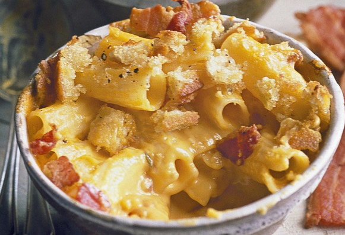
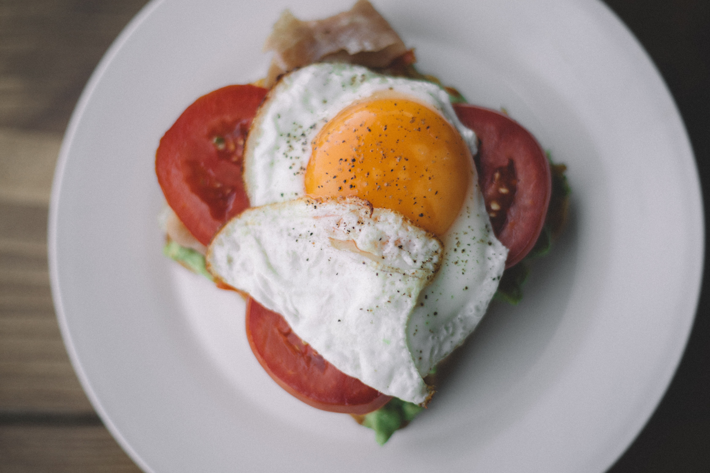

Быстро и дёшево: лучшие рецепты для студентов
Простые рецепты для студентов имеют важное значение для выживания в университете, как в общежитии, так и в случае проживания в квартире. Была бы только кухня...
Существует масса лёгких в приготовлении и дешёвых блюд, которые вы можете приготовить с очень небольшим количеством ингредиентов, почти не потратив времени. Вы можете вкусно поесть, почти ничего не потратив!
Макароны с сыром

Варим , добавляем сверху сыр (если нет тёрки, просто порежьте его кубиками). А дальше — фантазируем. Сюда же можно добавить кетчупа или любого другого соуса.
В качестве гарнира хорош свежий салат: помидоры и огурцы с растительным маслом, петрушка и укроп, капуста и морковь.
Макароны с сыром всегда выигрывают, даже на вечеринке. Добавьте нарезанной ветчины, и вы получаете праздничное блюдо.
Ещё вариант.
- Сварите макарон
- В отдельной кастрюле взбейте молоко (стакан) с мукой (столовая ложка)
- добавив примерно 1/3 чайной ложки соли и немного сахара и перца по вкусу
- Постоянно помешивайте, доведите до кипения
- уменьшите огонь и продолжайте помешивать в течение нескольких минут, пока соус не загустеет
- добавьте измельчённый сыр и перемешивайте до расплавления
- вылейте сырную смесь на макароны
- Можно добавить горох, бекон, кубики ветчины, тунца, помидоры или лук-шалот
Спагетти болоньезе

Лучшие в мире спагетти болоньезе — удивительно просто и очень круто, подойдёт для вечеринки!
- Варите спагетти
- сливаете воду, добавляете ложку растительного масла
- В другой кастрюле или сковороде в растительном масле поджариваете лук (5 минут)
- добавляете любой фарш (жарить 10-15 минут)
- добавляете туда же кетчуп или пасту болоньезе
- выкладываете готовые спагетти
- Перемешать, готово!
Пицца для студентов

- Насыпать в миску муки (попробуйте с 1-2 стаканов, при желании потом будете готовить больше)
- добавьте к ним щепотку соли
- 1-2 столовых ложки оливкового масла (можно больше; можно заменить подсолнечным)
- сухую горчицу + приправу для пиццы (если они у вас есть)
- 1-2 ст.ложки лимонного сока (проще всего купить в магазине, хватит надолго)
- щепотку соды
- дальше понемногу добавлять холодной воды и вручную замешивать тесто.
- Когда готово, дать ему полежать 30-60 минут, после этого раскатать на противень, или просто руками отрывать куски и делать лепёшки.
- Отправить выпекаться в духовку (180 градусов) на 10-15 минут (если планируете потом добавить начинку, выпекать можно меньше; если будете просто есть пиццевые лепёшки, то до золотистого цвета)
Начинкой для пиццы может быть всё что угодно. Готовую лепёшку можно смазать оливковым или подсолнечным маслом, обязательно смазать кетчупом. Из обязательного — лук кольцами и нарезанные томаты. Дальше, по желанию, колбаса,
кукуруза и горошек, шампиньоны, нарезанный сладкий перец, зелень, брокколи. В качестве соуса можете добавить сметану, сливки, майонез.
Паста из сыра

Сырная паста всегда будет хитом к любому блюду, особенно к макаронам. Готовить просто:
- вылить в ковш 10% сливки (стакан)
- щепотку соли
- добавить пряности (чёрный перец и другие)
- нарезанные кубиками (пармезан, чеддер, рокфор, эмменталь, что найдёте)
- нагревать до растворения сыра, готово!
Омлеты для студентов

Возможно, самая простая и самая дешёвая еда для студентов. С грибами, перцем, томатами и другим!
Для одной порции достаточно 2-3 яиц.
- Аккуратно разбить яйца в миску
- взбивать вилкой до однородной массы без образования пены
- Если их слишком сильно взбить, омлет получится пышный, плотный, непластичный
- К яйцам можно добавить молоко/сливки, а можно не добавлять
- Посолить, поперчить
- На горячую сковороду выкладываем кусочек сливочного масла, когда оно растопится, выливаем яичную массу
- Жарить на среднем огне минут 7
Возможны любые вариации. В масло перед выливаем яиц можно положить поджариться: резаные сосиски или колбасу, порезанные томаты, перец, кабачки, нарезанные шампиньоны, бобы (консервированные), брокколи или цветную капусту
(пакет замороженных овощей), лук и чеснок, тёртый картофель... В конце можно посыпать сыром.
Яичница и тосты

Всё, что вам нужно сделать, чтобы приготовить эту еду:
- взболтать яиц
- поджарить хлеб
- потом вылить на него яичную смесь и поджарить минут 5-7
- вкусно с мариноваными огурчиками, оливками